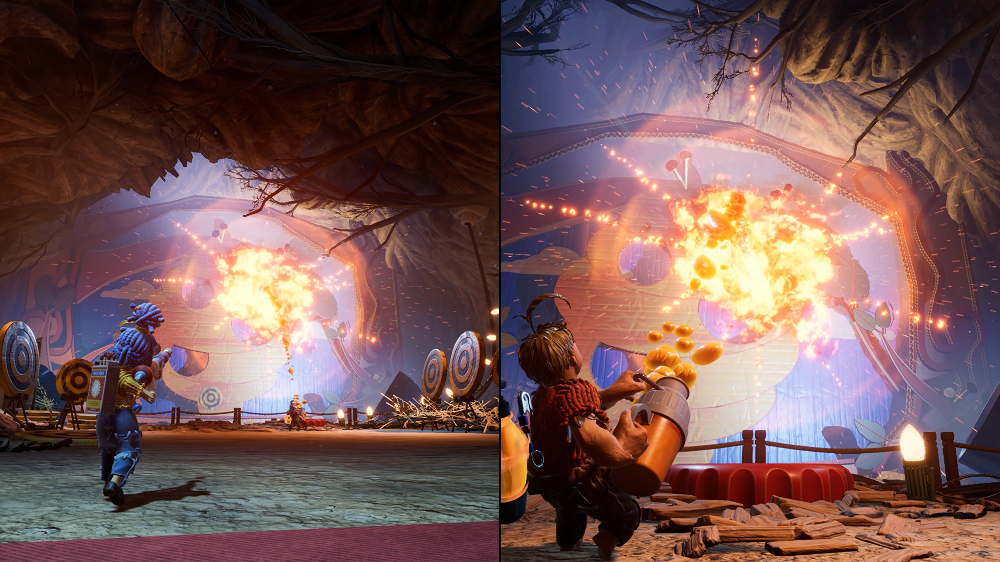

Minha preferência em games vai para jogos mais cartoonizados. Jogos que não seguem tanto para o lado realista, mas que dão profundidade aos gráficos.
Um dos meus favoritos graficamente é Crash Bandicoot: It's about time.
Um outro jogo que me agrada muito visualmente é o "It takes two"